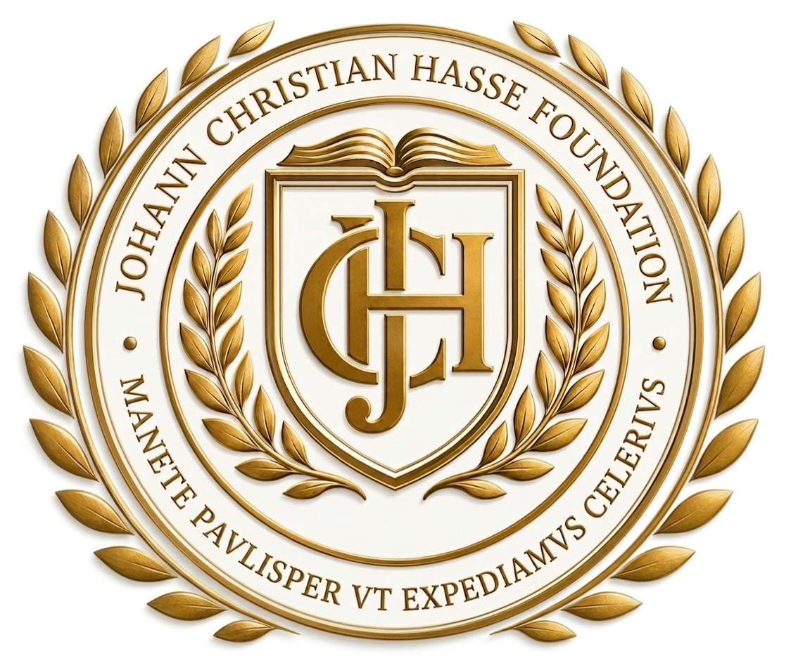

Johann Christian Hasse Foundation
Amazon Living Lab
A professional formation system where fellows operate c-ECO on real institutional cases across 13 sectors.
Fellows do not merely study c-ECO. They operate it on real institutional cases — the same cases that feed the c-ECO Pilot and Enterprise streams. This creates a live ecosystem where risk moves from measurement to market signal.
Result: Fellows get a certificate. Institutions get nothing.
Result: A functioning micro-market of c-ECO. Fellows operate. Clients receive.
The c-ECO Fellowship, Pilot, and Enterprise are not separate products. They are a continuous execution system. The Fellowship operates on real cases. The Pilot delivers rapid outputs. The Enterprise transforms institutional governance.
How it flows: A Pilot client brings a real case. The Fellowship cohort operates on that case through the three tracks. The outputs feed into the Pilot deliverables. The Enterprise layer scales this into full institutional governance. One ecosystem. Continuous execution.
Each group works on the same real case, but in different layers. This creates continuity between measurement, decision, and market signal.
Every cohort operates within a specific sectoral environment. Each sector represents a frontier where systemic risk converges with institutional decision-making.
A compressed execution cycle. Each week builds on the previous, creating momentum toward a market-ready deliverable.
Participation may occur through standard paid admission, scholarship-supported admission, invitation-based participation, or institutional sponsorship.
Final conditions depend on case-specific review, data classification, field exposure, institutional complexity, and the scope defined in the applicable CSAM and licensing pathway. Standard recognition is valid for 24 months unless a shorter cycle is specified for pilot or exceptional environments.
The c-ECO Fellowship is a controlled applied system. Here is everything you need to understand before applying.
Candidates capable of operating in high-complexity systemic environments
Preference given to: candidates with prior experience in contracts, infrastructure, finance, environmental systems, mineral extraction, water systems, energy systems, or adjacent institutional fields. Ability to engage with applied — not merely abstract — problem environments is essential.
The organization may decline to fill all positions if applications do not meet the required institutional level.
Applications are open for the 2026 cohort. This is a selective applied entry — not an open-enrollment course. If you are ready to operate on real systems, we want to hear from you.
The c-ECO Fellowship Program is operated under the Johann Christian Hasse Foundation in collaboration with Instituto Silvio Meira (ISM). This is not an academic degree program. Admission does not automatically confer title acquisition, certification, or unrestricted use of the c-ECO framework.